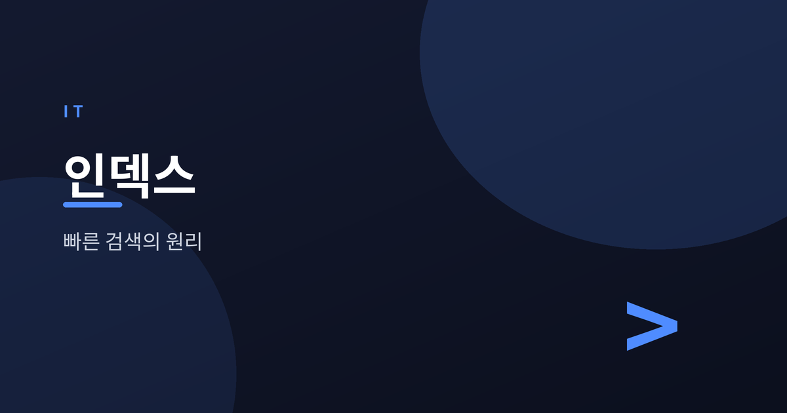
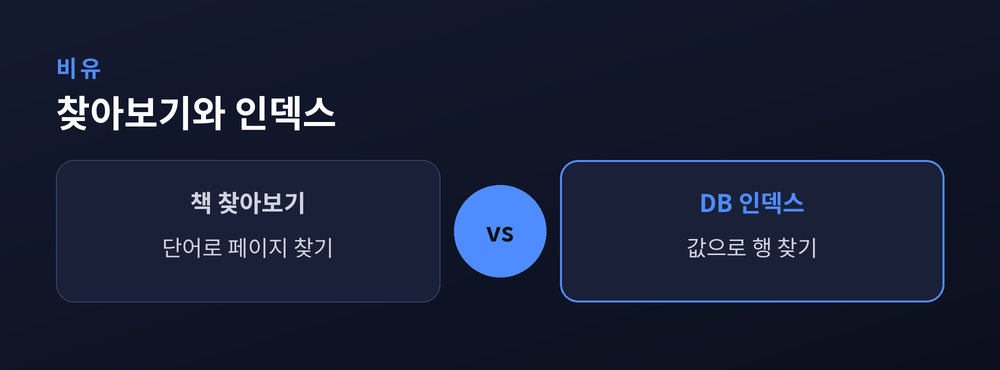
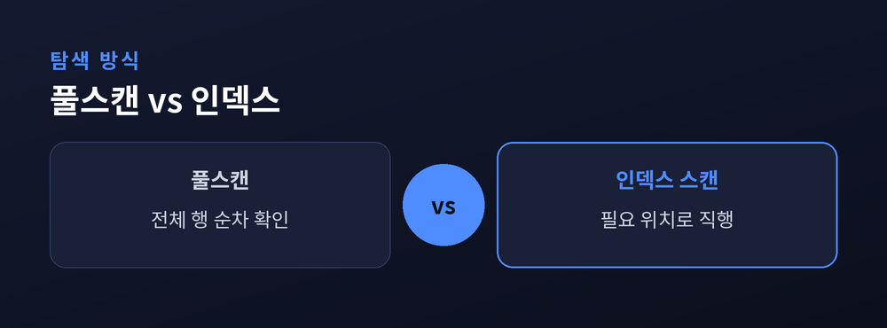
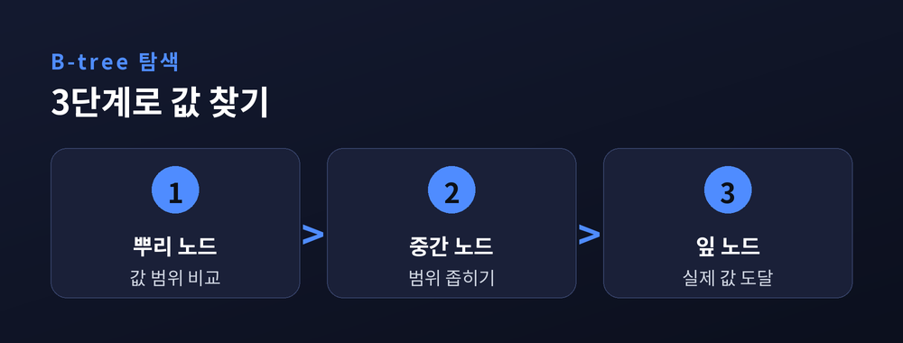
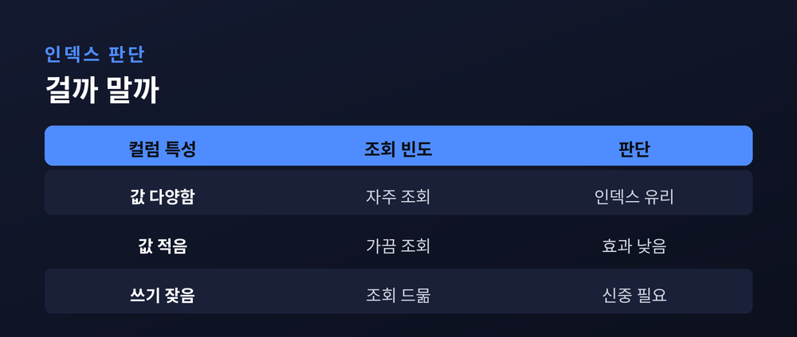

수백만 건에서 원하는 데이터를 순식간에 찾는 법

이번 글에서는 데이터베이스 인덱스를 정리해 보겠습니다. 결론부터 말씀드리면, 인덱스는 책 맨 뒤의 찾아보기와 같아서 수백만 건의 데이터에서도 원하는 행을 순식간에 찾아내는 지름길입니다.
인덱스가 없으면 데이터베이스는 테이블을 처음부터 끝까지 훑어야 합니다. 데이터가 적을 때는 문제가 없지만, 행이 수백만 건으로 늘어나면 이 방식은 급격히 느려집니다. 인덱스는 이 탐색 비용을 근본적으로 줄여 줍니다.
다만 인덱스가 만능은 아닙니다. 조회는 빨라지지만 쓰기가 느려지고 저장공간도 더 씁니다. 그래서 무엇을, 언제 걸어야 하는지 판단이 중요합니다. 기초 개념부터 하나씩 짚어 보겠습니다.
인덱스(index)는 데이터를 빠르게 찾기 위해 별도로 만들어 두는 정렬된 자료구조입니다. 책 뒤편의 찾아보기를 떠올리면 이해가 쉽습니다. 우리는 책 전체를 넘겨보지 않고, 찾아보기에서 단어를 짚어 해당 페이지로 곧장 넘어갑니다.
데이터베이스도 마찬가지입니다. 특정 컬럼에 인덱스를 만들어 두면, 그 컬럼의 값들이 미리 정렬되어 저장됩니다. 값이 정렬돼 있으면 원하는 값을 훨씬 적은 비교로 찾아낼 수 있습니다.
핵심은 하나입니다. 인덱스는 데이터 본체와 별개로 존재하는 탐색용 지도라는 점입니다. 지도가 있으면 목적지까지 헤매지 않습니다.

인덱스가 없을 때 데이터베이스가 쓰는 방식이 풀스캔(Full Scan)입니다. 테이블의 모든 행을 처음부터 끝까지 하나씩 확인합니다. 행이 100만 건이면 최악의 경우 100만 번을 비교해야 합니다.
반면 인덱스 스캔(Index Scan)은 정렬된 인덱스를 이용해 필요한 위치로 바로 접근합니다. 100만 건이라도 스무 번 남짓의 비교로 원하는 값에 도달할 수 있습니다. 비교 횟수의 차이가 곧 속도의 차이입니다.
예전에는 데이터가 적어 풀스캔으로도 충분했습니다. 지금은 데이터가 방대해져 인덱스 없이는 감당하기 어렵습니다. 규모가 커질수록 이 격차는 더 벌어집니다.

대부분의 데이터베이스는 인덱스를 B-tree(비트리) 구조로 만듭니다. B-tree는 값을 계층적으로 정렬해 두는 나무 모양의 자료구조입니다. 맨 위 뿌리에서 시작해 가지를 타고 내려가며 원하는 값을 좁혀 갑니다.
탐색은 대략 세 단계로 이뤄집니다. 먼저 뿌리 노드에서 값의 범위를 비교하고, 다음 중간 노드로 내려가 범위를 더 좁히며, 마지막 잎 노드에서 실제 값을 찾습니다. 각 단계에서 후보가 크게 줄어듭니다.
이 구조 덕분에 데이터가 늘어도 탐색 단계는 완만하게만 증가합니다. 100만 건이든 1000만 건이든 몇 단계면 도달한다는 뜻입니다. B-tree가 인덱스의 표준으로 자리 잡은 이유입니다.

인덱스는 크게 두 종류로 나뉩니다. 클러스터형 인덱스(Clustered Index)는 데이터 자체를 인덱스 순서대로 정렬해 저장합니다. 테이블당 하나만 둘 수 있으며, 보통 기본 키(Primary Key)가 이 역할을 맡습니다.
보조 인덱스(Secondary Index)는 데이터 본체와 별도로 만들어지는 인덱스입니다. 정렬된 값과 함께, 실제 데이터가 있는 위치를 가리키는 표지를 담고 있습니다. 한 테이블에 여러 개를 둘 수 있습니다.
둘의 차이를 비유하면 이렇습니다. 클러스터형은 책의 내용 자체가 순서대로 편집된 것이고, 보조 인덱스는 뒤에 붙은 별도의 찾아보기입니다. 상황에 맞게 함께 쓰면 조회 성능을 넓게 끌어올릴 수 있습니다.
여러 컬럼을 묶어 하나로 만든 인덱스를 복합 인덱스(Composite Index)라고 합니다. 예를 들어 지역과 나이를 함께 조건으로 자주 조회한다면, 두 컬럼을 묶어 인덱스를 걸 수 있습니다.
복합 인덱스에서는 컬럼의 순서가 대단히 중요합니다. 앞쪽 컬럼부터 차례로 정렬되기 때문입니다. 앞 컬럼을 조건에 쓰지 않으면 인덱스의 이점을 제대로 살리기 어렵습니다. 자주 쓰고 선택 범위를 크게 좁히는 컬럼을 앞에 두시길 권합니다.
순서만 잘 잡아도 하나의 인덱스로 여러 조회를 감당할 수 있습니다. 반대로 순서가 어긋나면 인덱스가 있어도 쓰이지 않는 일이 생깁니다.

인덱스는 공짜가 아닙니다. 우선 쓰기 성능이 떨어집니다. 데이터를 넣거나 고치거나 지울 때마다 인덱스도 함께 갱신해야 하기 때문입니다. 인덱스가 많을수록 쓰기 부담은 커집니다.
저장공간도 추가로 듭니다. 인덱스는 별도의 자료구조라서 그만큼의 디스크를 차지합니다. 쓰지 않는 인덱스를 방치하면 공간과 성능을 함께 잃는 셈입니다.
그래서 판단 기준은 이렇습니다. 조회 조건에 자주 쓰이고, 값의 종류가 다양해 범위를 크게 좁혀 주는 컬럼에 인덱스를 거는 것이 유리합니다. 반대로 값의 종류가 적거나 조회에 거의 쓰이지 않는 컬럼, 쓰기가 매우 잦은 테이블에서는 신중해야 합니다.
정리하면 이렇습니다. 인덱스는 조회 속도를 극적으로 끌어올리지만, 쓰기와 저장공간이라는 대가를 치릅니다. "필요한 곳에만, 정확히 건다" — 이 원칙 하나면 대부분의 판단이 정리됩니다.
인덱스를 어디에 걸어야 할지 막막하셨다면, 가장 자주 조회하는 조건부터 살펴보시길 권합니다. 그 한 걸음이 수백만 건 속에서 원하는 데이터를 순식간에 꺼내는 지름길이 되어 줄 것입니다.